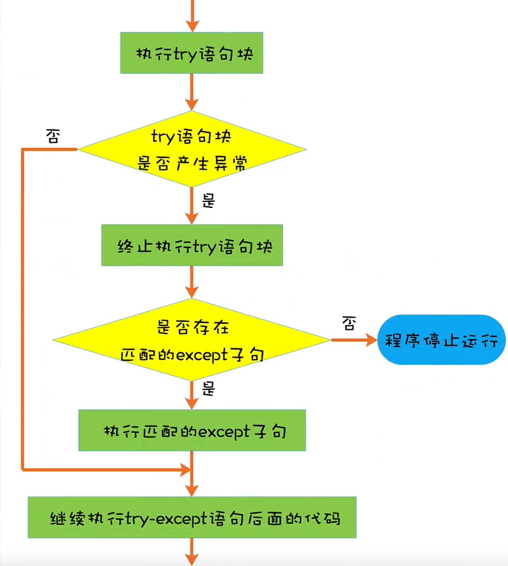

异常
什么是异常
异常指的是程序在没有语法错误的前提下，在运行期间产生的特定错误。每个特定错误都对应一个异常类对象。当产生某个特定错误时，其异常类对象的实例对象就会被抛出，如果在程序中对抛出的异常实例对象不进行捕获和处理，程序就会停止运行，并且答应错误的详细信息，包括：
1、Traceback，指的是异常调用堆栈的跟踪信息，其中列出了程序中的相关行数；
2、对应的异常类对象的名称以及错误信息；
如果在程序中对抛出的异常实例对象进行捕获和处理，程序就会继续运行。
哪些特定的错误会被看做是异常，首先Python内置了很多异常类对象，其次，可以自定义异常类对象，所以，内置的异常类对象和自定义的异常类对象对应的错误会被看做异常。
BaseException
+-- SystemExit
+-- KeyboardInterrupt
+-- GeneratorExit
+-- Exception
+-- StopIteration
+-- StopAsyncIteration
+-- ArithmeticError
| +-- FloatingPointError
| +-- OverflowError
| +-- ZeroDivisionError
+-- AssertionError
+-- AttributeError
+-- BufferError
+-- EOFError
+-- ImportError
| +-- ModuleNotFoundError
+-- LookupError
| +-- IndexError
| +-- KeyError
+-- MemoryError
+-- NameError
| +-- UnboundLocalError
+-- OSError
| +-- BlockingIOError
| +-- ChildProcessError
| +-- ConnectionError
| | +-- BrokenPipeError
| | +-- ConnectionAbortedError
| | +-- ConnectionRefusedError
| | +-- ConnectionResetError
| +-- FileExistsError
| +-- FileNotFoundError
| +-- InterruptedError
| +-- IsADirectoryError
| +-- NotADirectoryError
| +-- PermissionError
| +-- ProcessLookupError
| +-- TimeoutError
+-- ReferenceError
+-- RuntimeError
| +-- NotImplementedError
| +-- RecursionError
+-- SyntaxError
| +-- IndentationError
| +-- TabError
+-- SystemError
+-- TypeError
+-- ValueError
| +-- UnicodeError
| +-- UnicodeDecodeError
| +-- UnicodeEncodeError
| +-- UnicodeTranslateError
+-- Warning
+-- DeprecationWarning
+-- PendingDeprecationWarning
+-- RuntimeWarning
+-- SyntaxWarning
+-- UserWarning
+-- FutureWarning
+-- ImportWarning
+-- UnicodeWarning
+-- BytesWarning
+-- ResourceWarning
所有内置异常类对继承自Exception
try-except捕获处理异常
程序在运行期间产生异常时，为了让程序能够继续执行，可以对抛出的异常实例对象进行捕获和处理，这是通过try-except语句实现的：把可能会产生异常的代码放在try语句块中以捕获异常实例对象，把处理异常的代码放在由若干个except子句组成的except语句块中。
语法格式：
try:
可能会产生异常的代码
except 异常类对象1:
当前except子句处理的代码
except 异常类对象2：
当前except子句处理的代码
...
...
except 异常类对象n：
当前except子句处理的代码

#!/usr/bin/python3
try:
i = 1 / 0
except ZeroDivisionError:
print('0不能作为除数')
如果抛出的异常实例对象所对应的类对象是except子句中异常类对象的子类，那么该except子句也会被匹配。
#!/usr/bin/python3
try:
i = 1 / 0
except ArithmeticError: # ArithmeticError是ZeroDivisionError的父类
print('数学错误')
当try语句块产生异常时，会从上到下依次查找是否有匹配的子句，只要找到一个匹配的except子句，则不会查找剩余的except子句，因此一定要注意各个except子句的顺序
#!/usr/bin/python3
try:
i = 1 / 0
except ArithmeticError:
print('数学错误')
except ZeroDivisionError:
print('0不能作为除数')
[root@lyucan ~]# ./yc.py
数学错误
当多个异常类对象所对应的异常处理代码完全相同时， 可以把这些异常类对象以元组的形式放在一个except子句中。
#!/usr/bin/python3
try:
i = 1 / 0
except (ZeroDivisionError,TypeError):
print('运行出错了')
使用as访问异常
如果想在匹配到的except子句中访问异常实例对象，可以在except子句的冒号前添加关键字as和一个变量。
#!/usr/bin/python3
try:
i = 1 / 0
except (ZeroDivisionError, TypeError) as err:
print(type(err))
print(err)
[root@lyucan ~]# ./yc.py
<class 'ZeroDivisionError'>
division by zero
使用Exception捕获其他异常
为了在except语句块中将所有的异常类对象尽可能的覆盖到，可以将最后一个except子句中的异常类对象指定为Exception（内置异常类对象和自定义异常类对象都继承自Exception），或者在最后一个except子句中不指定异常类对象。
#!/usr/bin/python3
try:
i = int('abc')
except (ZeroDivisionError,TypeError):
print('除0错误和值错误')
except Exception: # 这里也可以不指定异常类对象，直接使用 except:
print('其他错误')
使用else从句
可以在while语句或for-in语句的后面添加else语句，类似的，可以在 try-except语句后面添加else从句。
语法格式：
try:
可能会产生异常的代码
except 异常类对象1:
当前except子句处理的代码
except 异常类对象2：
当前except子句处理的代码
...
...
except 异常类对象n：
当前except子句处理的代码
else:
try语句块中没有产生异常时执行的代码

使用finally从句
可以在try-except语句的后面添加finally从句，finally从句总会被执行，通常在finally从句中释放资源，例如：关闭文件、关闭网络连接等。
语法格式：
try:
可能会产生异常的代码
except 异常类对象1:
当前except子句处理的代码
except 异常类对象2：
当前except子句处理的代码
...
...
except 异常类对象n：
当前except子句处理的代码
finally:
总会被执行的代码

同时具有else和finally从句
try:
可能会产生异常的代码
except 异常类对象1:
当前except子句处理的代码
except 异常类对象2：
当前except子句处理的代码
...
...
except 异常类对象n：
当前except子句处理的代码
else:
try语句块中没有产生异常时执行的代码
finally:
总会被执行的代码

使用raise语句手动抛出异常
对于前面课程中的示例，在发生异常时的异常实例对象都是被自动抛出的，我们可以使用raise语句手动的抛出异常实例对象，
语法格式为：
raise 异常类对象[([参数])]
如果没有传入参数，可以省略小括号
#!/usr/bin/python3
raise ZeroDivisionError('0不能作为除数')
raise ZeroDivisionError()
raise ZeroDivisionError
#!/usr/bin/python3
try:
raise ZeroDivisionError
except ZeroDivisionError:
print('0不能作为除数')
[root@lyucan ~]# ./yc.py
0不能作为除数
如果在except语句块中不想对异常实例对象进行处理，可以使用关键字raise将其原样抛出，或者抛出另外一个异常类对象的实例对象。
#!/usr/bin/python3
try:
raise ZeroDivisionError
except ZeroDivisionError:
raise
[root@lyucan ~]# ./yc.py
Traceback (most recent call last):
File "./yc.py", line 4, in <module>
raise ZeroDivisionError
ZeroDivisionError
#!/usr/bin/python3
try:
raise ZeroDivisionError
except ZeroDivisionError:
raise ValueError('值错误')
[root@lyucan ~]# ./yc.py
Traceback (most recent call last):
File "./yc.py", line 4, in <module>
raise ZeroDivisionError
ZeroDivisionError
During handling of the above exception, another exception occurred:
Traceback (most recent call last):
File "./yc.py", line 6, in <module>
raise ValueError('值错误')
ValueError: 值错误
自定义异常
尽管python内置的异常类对象可以满足我们绝大多数的需求，但是有时候我们可能想要创建自定义的异常类对象。正如所有内置异常类对象的基类是Exception，自定义异常类对象只需要继承Exception或其子类。
#!/usr/bin/python3
class MyException(Exception):
def __call__(self):
print('自定义异常')
try:
raise MyException
except MyException as err:
err()
[root@lyucan ~]# ./yc.py
自定义异常
异常和函数
当函数内发生异常时，异常实例对象会被抛给该函数的调用者，如果该函数的调用者没有捕获和处理，则继续抛给上一撑的调用者，这样一直向上抛，最后会被Python解释器捕获。
在异常实例对象在向上抛的过程中，可以选择合适的层对异常实例对象进行捕获和处理，而不需要在每一层进行捕获和处理。
#!/usr/bin/python3
def f1():
print(1 / 0)
def f2():
try:
f1()
except ZeroDivisionError as err:
print(err)
def f3():
f2()
f3()
print('继续执行代码')
[root@lyucan ~]# ./yc.py
division by zero
继续执行代码